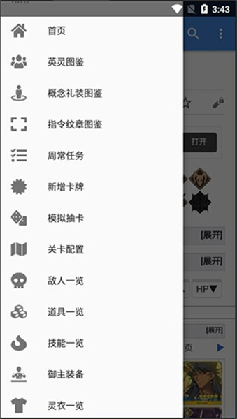

用 Mooncell 把 FGO 周常和刷本效率拉满——一篇上手就能用的实战教程
Mooncell 不止是一个 Wiki，它内置的周常规划器、素材图鉴和指令纹章数据能帮你大幅节省 AP 和搜索时间，这篇教程从零带你把这些功能用起来。
你有没有过这种经历：每周一开游戏面对一堆御主任务，要杀 N 个剑阶敌人、刷 N 次关、用 N 次术阶从者，翻遍脑子里记得的关卡还是凑不出一条顺手的路线？或者给从者升技能时看到缺的那个素材，打开游戏内置图鉴只能看到"刷 XX 关卡"，却不知道那个关卡 AP 消耗多少、掉落率到底能不能接受？
这篇教程结束的时候，你会用 Mooncell 的周常规划器自动算出最优刷本路线，会查素材图鉴对比每个掉落点的效率，还知道怎么在指令纹章图鉴里搜效果关键词来搭一套伤害加成组合。如果你平时 FGO 的 AP 都是精打细算着用的，接下来的东西能帮你省不少。
准备工作
先确认三件事：
- 你需要一个 FGO 账号，日服和国服的 Mooncell 数据是分开的，别进错版本。
- Mooncell 的周常规划器需要登录才能用，先去下载好浏览器端或者移动端，注册流程和大多数 Wiki 一样——邮箱注册、验证、完成。如果你只想查图鉴类的内容（素材、纹章、从者数据），不登录也能看。
- 首次使用周常规划器时，它会让你选择当前御主任务是国服还是日服的，选对了再继续。
第一步：打开周常规划器，让它替你算路线
打开fgowikimooncell官网首页，导航栏里找"周常规划"入口，点进去就是规划器的主界面。
这里注意——规划器的核心逻辑是"同时覆盖多个任务"，而不是一个任务对应一个关卡。FGO 的周常设计本身就有这种可叠加性：比如一个关卡里同时有弓阶和枪阶敌人，你刷一次就能同时计入"杀 N 个弓阶"和"杀 N 个枪阶"两个任务的进度。规划器做的就是在所有关卡的敌对阵型里找到那套叠加效率最高的组合。
登录之后，规划器会自动读取当前版本的御主任务清单（来自社区维护的任务表），然后生成一套推荐关卡列表。列表里每一关都会标注"这关覆盖了哪些周常任务"，你可以一眼看到自己这一趟刷下来能搞定多少项。
如果某周有活动在进行，规划器还会多出一个"限时任务"的选项卡——勾选之后它会把活动里的限时任务也纳入计算范围，同时考虑活动素材的掉落效率。活动期间刷关，很多人习惯性先刷活动关卡把活动素材拿到手，Mooncell 会告诉你哪些活动关卡本身就能满足周常条件，不用周常和活动分成两趟刷。
第二步：查素材——从"缺什么"到"去哪里刷最划算"
给从者升技能的时候，你肯定见过那种情况：升一个技能要三种素材，两种活动里刚换过，偏偏第三种得自己刷。这时候直接搜 Mooncell 的素材图鉴比在游戏里翻翻省时间。
具体流程是这样的：
- 在 Mooncell 顶部搜索栏里直接打素材名字——比如"八连双晶"或者"传承结晶"。
- 进入素材详情页，往下翻找到"掉落地点"表格。
- 表格里每个关卡都会列出三个关键信息：AP 消耗、单次掉落率、每 AP 的期望掉落数。
- 对比一下，选那个每 AP 最高的关卡刷。
别小看最后一个指标——AP/素材的效率比是社区玩家算出来的，官方图鉴不会给你这个数据。同一个素材在 A 关卡可能每 20 AP 掉一个，在 B 关卡可能每 15 AP 掉一个，差得还挺多。
另外，素材图鉴页还会标注"哪些活动曾经提供过这个素材的兑换"。如果你查的时候刚好有活动在开，先去翻活动兑换表，活动里换的成本通常是刷关卡的几分之一，能换的绝对别刷。

第三步：指令纹章搭配——搜效果关键词就够了
指令纹章是 FGO 在 2019 年加的系统，给从者的五张指令卡刻印后提供一次性额外效果，用完就消耗掉了。这个系统说简单也简单——选一张卡、扣一个纹章、加一个效果；但说它复杂也复杂，因为可选的纹章太多了，效果又五花八门，不知道怎么挑的时候很容易乱装。
Mooncell 的指令纹章图鉴解决的就是"怎么挑"的问题。它把所有纹章按稀有度（SSR/SR/R）分类，每条数据里都有精确的效果数值、获取途径和插画。你要搭配的时候，不用一条条翻，直接用搜索功能打关键词——比如"红卡伤害"，所有红卡伤害加成类的纹章就全出来了，对比数值挑最高的装就行。
社区玩家也常在从者详情页里放推荐纹章搭配，比如"狂阶从者常用的暴击纹章组合"或者"蓝卡队的 NP 回复纹章推荐"，查的时候顺便看看别人怎么搭的，有不懂的参数细节去文档里搜一下，能省不少试错时间。
常见卡点
卡点一：周常规划器算出来的关卡我不想刷（比如太老的剧情关）
别急着硬刷，规划器支持自定义排除。登录后进入用户空间，创建一个自定义规划范围页面，把你不想刷的关卡加进排除列表，重新规划就会避开这些关卡。同时还能设置"优先刷哪些素材的关卡"，它会在满足任务覆盖的前提下优先推荐你需要的素材掉落关。
卡点二：搜到的素材关卡 AP 消耗都太高，有没有更低的？
有时候活动期间新开放的活动关卡掉率比常驻关更高、AP 更低，但活动过了就没了。这时候规划器里勾选"限时任务"会自动把活动关卡也纳入推荐，不用自己一个个找。活动结束之后如果实在只能刷常驻关，就按素材图鉴里的效率比从高到低刷，别盯着一个关卡硬刷。
卡点三：指令纹章装错了怎么办？
Mooncell 本身不管游戏内操作，但它的纹章图鉴会标注"刻印后可通过特定道具移除"——查一下你装错的那张纹章能不能移除，能移除的话就花点成本拿掉，不能的话下次装之前多看看社区推荐。
进阶一句话
以上三步覆盖了 FGO 玩家日常最高频的查询和规划场景。Mooncell 还有更多板块——从者详情页里的技能组分析、礼装图鉴里的效果对比、关卡配置页里的完整敌人表——这些数据之间都是互相链接的，顺着点下去你会发现很多之前不知道的信息。
想要完整的 Mooncell 数据和离线备份，GitHub主仓库同步了最全的版本，Gitee国内访问更稳，GitCode是额外备份以防万一，按需取用就行。